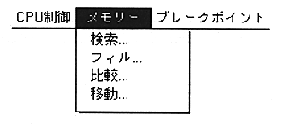
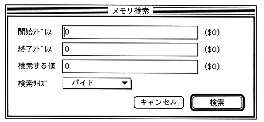
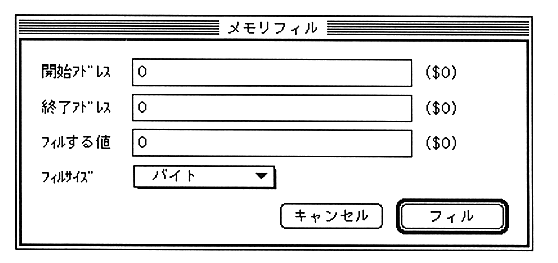

It corresponds to the console command as shown below, and each selection will display a movable modal dialog for entering arguments.
Search
Corresponds to the MS command. However, the results are displayed in the information window.

Fill
Corresponds to the F command.
